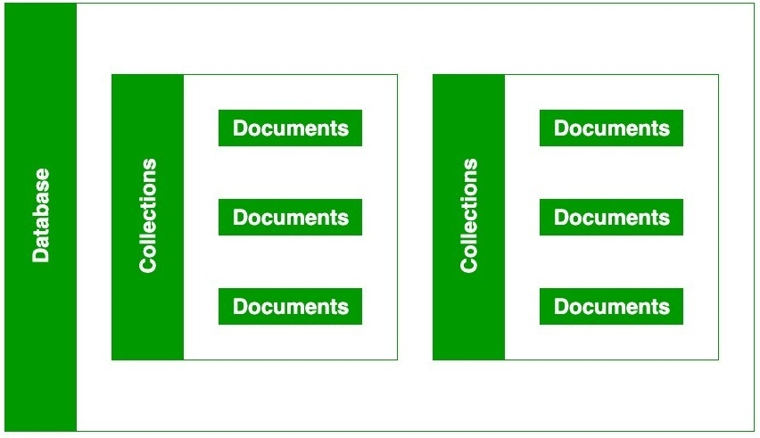

MongoDB
Has data in Document Database
Data is stored using the JSON Format
JSON format was developed in 2001 and it stands for Javascript Object Notation
{ key:"Value", key2:"value2"}
Datatypes in JSON
{ "STRING":"This is a sample string", "NUmber":2, "boolean":true, "array":["first","second","third"],"object":{"key1":1,"key2":"sample"},"null":null}
How to remember this? ss bb nn
String,Symbol,boolean,bigint,number,null,array
BSON Format
BSON stands for Binary JSON
MongoDB stores documents in BSON Format
Why we need BSON?: json supports like six datatypes, but BSON support like whole lot of them
BSON Types
- String
- Double
- 32-bit integer
- 64bit integer
- boolean
- array
- Object
- null
- regular expression
- timestamp
- date
- objectid
ConversioN between JSON and BSON
For common we dont need conversion
some exist in json but not in bson, so we convert those data types like number and date
Extended JSON Modes
Shell Mode
Strict Mode
MongoDB Structure
Each Database in MongoDB Consists of collectios,each collection contains the documents and these documents store data in BSON
MongoDB Architecture

Server is launched using mongod
mongoshell is used to connect to mongo server
MongoDB remote Management
MongoDB Interaction: Mongo Driver
SSL Encryption is strongly recommended when interating with MongoDB Server
Mongodb Introduction revision
- Document Database
- JSON
- BSON
- JSON and BSON datatypes
- extended Json
- MongoDB-Architecture